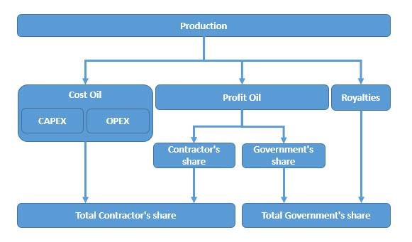

<div class="row" id="title" >
	<div class="col-lg-6 col-lg-offset-3 col-md-8 col-md-offset-2 output-content">
		<div class="social-buttons-small">
		<a class="btn btn-extractives btn-home" href="http://code4sa.org/offshore-oil"><i class="fa fa-home" aria-hidden="true"></i></a>
		    <a target="_blank" class="btn btn-facebook btn-share-small hidden-lg hidden-md" href="http://www.facebook.com/sharer/sharer.php?u=http://www.code4sa.org/offshore-oil"><i class="fa fa-fw fa-facebook-official" aria-hidden="true"></i> Share</a> <a target="_blank" class="btn btn-twitter btn-share-small hidden-lg hidden-md" href="https://twitter.com/intent/tweet?text=www.code4sa.org/offshore-oil"><i class="fa fa-fw fa-twitter" aria-hidden="true"></i> Tweet</a>
		</div>
		<h3 class="output-title">Tracing the development of oil regimes in Nigeria from discovery until the present: who & how it was designed to serve</h3>
		<div class="well">
			<h4><b>Table of contents</b></h4>
			<ul class="list-unstyled no-chapter" style="margin-bottom: 0px;">
				<li><a href="#chapter-1">Mandate</a></li>
				<li><a href="#chapter-2">Background</a></li>
				<li><a href="#chapter-3">Regulatory Frameworks</a></li>
				<li><a href="#chapter-4">The Importance of PSCs in Deepwater Pricing</a></li>
				<li><a href="#chapter-5">How market oil and price futures impacts pricing process</a></li>
				<li><a href="#chapter-6">Potential for deepwater pricing manipulation</a></li>
				<li><a href="#footnotes">Footnotes</a></li>
			</ul>
		</div>
		<h4 id="chapter-1" class="output-chapter">Mandate <a class="to-top" href="#title"><i class="fa fa-arrow-circle-o-up" aria-hidden="true"></i></a></h4>
		<p>
			Preliminary findings show there are a number of factors that come into play when pricing deepwater crude oil
			in Nigeria and Angola. Most importantly, the pricing system is principally influenced by the market price of
			oil (supply and demand) and oil futures (hedging and speculation).<br><br>

			Other key factors that drive the pricing of deepwater crude oil are evidenced in the terms and conditions of the
			Production Sharing Contracts (“PSCs”) which relate to the division of the oil production between the
			international oil company (“IOC”) and the national oil company (“NOC”). The latter is largely discussed to
			discern specific contractual arrangements between the parties.<br><br>

			Key persons from the oil, financial legal and government sectors have been contacted with regard to the below
			stated mandate. Persons contacted in the Nigerian and Angola governmental sectors have failed to respond
			despite numerous attempts to contact them. HUMINT includes contact with individuals from the financial,
			legal and non-governmental sectors. The majority of what was discussed with them has been collaborated by
			public sources and is reflected in this paper.<br><br>

		The mandate is as follows:</p>
		<ul>
			<li>
				Investigate the process of pricing deep water oil in Nigeria with a general focus as well as a specific
				investigation of one company;
			</li>
			<li>
				Investigate the process of pricing deep water oil in Angola with a general focus as well as a specific
				investigation of one company;
			</li>
			<li>
				Analyse the key differences involved between both offshore sectors; and,
			</li>
			<li>
				Interview key persons from the oil, financial, legal and government sectors.
			</li>
		</ul>

		<h4 id="chapter-2" class="output-chapter">Background <a class="to-top" href="#title"><i class="fa fa-arrow-circle-o-up" aria-hidden="true"></i></a></h4>
		<p>
			Global oil prices have significantly dropped since 2014, heavily impacting the upstream sector in West Africa.
			Given that the pricing of oil in the offshore/deep water industry is greatly influenced by the market and oil
			futures, a key strategy for crude oil-producing countries is to decrease oil production (supply) to increase the
			market price of oil. Diverging interests in OPEC, in particular, Saudi Arabia and Iran, as well as the shale
			producers in the U.S. market, however, have resulted in steady production; as a result crude oil is heavily
			flooding the market. A recent attempt by the top oil producers on 17 April 2016 to negotiate a freeze on
			production and install a floor on crude oil prices was concluded without an agreement.<sup>1</sup><br><br>

			Upstream (offshore/deepwater) production costs by nature are fixed, high and typically amount to the
			expenditure of billions of US dollars per year.<sup>2</sup> These production costs are factored in when calculating the
			break-even price (“B/E price) of crude oil per barrel. Stated simply, profitability or loss is determined by the
			B/E price because it measures at which point the IOCs and the NOCs begin to make a profit or loss. In upstream
			projects, the production costs will be much higher than that of on-shore projects because of the risk, cost and
			expenditure associated with offshore/deepwater exploration and production (“E&P”). OPEC, of which Nigeria
			and Angola are members, has set the B/E price for crude oil at 52 US dollars per barrel (which is substantially
			tempered because of Saudi Arabia’s low cost of production),<sup>3</sup> and this far exceeds the current market price.
			Considering this, a number of upstream projects have or will be deferred or permanently terminated to offset
			losses.<br><br>

			It has been reported that since 2014, a total of 68 major upstream projects have been deferred to 2017. This
			deferral amounts to approximately 170 billion US dollars in potential investment. Countries that require heavy
			upfront investment (Angola, Nigeria and the Gulf of Mexico) account for more than 50 per cent of that deferred
			production.<sup>4</sup><br><br>

			Nigeria and Angola are the two biggest producers in Africa. Nigeria produces 1.6 million barrels per day<sup>5</sup> of
			crude oil that is low in sulfur and light and sweet,<sup>6</sup> while Angola produces 1.72 million barrels per day<sup>7</sup> of
			crude oil that is also low in sulfur but heavy and sweet.<sup>8</sup> The differing types of crude oil affect the marketability
			and overall demand of the respective crude oils.<sup>9</sup><br><br>

			Even though Angola’s crude oil is considered an overall poorer quality than that of Nigeria’s, it has higher
			demand because its client base consists of rapidly growing countries. Nigeria relies mostly on European
			countries’ consumption.<sup>10</sup>
		</p><br>

		<h5>Present situation in Nigeria</h5>
		<p>
			Nigeria fluctuates between being the largest and second largest producer of oil in Africa.<sup>11</sup> As oil accounts for
			70 per cent of the Nigerian economy, the recent decline in oil price is severely impacting the country.
			Approximately 70-75 per cent of Nigeria’s oil production is obtained via offshore drilling.<sup>12</sup> “Deep-Offshore”
			in Nigeria means any water depth beyond 200 meters.<sup>13</sup><br><br>

			Recent years have shown number of IOCs sought out offshore areas in Nigeria to counteract the onshore risks
			associated with the Nigerian oil industry. Due to the sharp fall in the price of oil, a number offshore projects
			have recently been deferred or terminated.<sup>14</sup> There are a number of deepwater projects that have yet to reach a
			final decision for investment such as Bonga Southwest and Aparo (Shell); Zabazaba-Etan (Eni); Bosi, Satellite
			Field Development Phase 2 and Uge (ExxonMobil); and Nsiko (Chevron).”<sup>15</sup><br><br>

			Since the mid-1990s, the Nigerian government has entered into deep water E&P contracts with the IOCs on
			terms that are estimated to be depriving the Nigerian government of 15 billion US dollars in oil revenue per
			year.<sup>16</sup> The Nigerian government however, did have the foresight to include a fifteen (15) year renegotiation
			clause in these contracts, and is now in the process of renegotiating these terms. The form of these contracts
			have changed with Production Sharing Contracts (“PSCs”) becoming the preferred agreement for the upstream
			E&P sector. Considering the Nigerian NOC, the Nigerian National Petroleum Company (“NNPC”), has not
			advanced with regard to its own commercial or operational infrastructure,<sup>17</sup> Nigeria will continue to rely upon
			IOCs for the foreseeable future.<br><br>

			Since 2010, NNPC has also entered into crude oil-for-product-swaps with traders which was received with
			public discord.<sup>18</sup> Countries usually engage in these swaps when they have nowhere else to turn. In this case,
			Nigeria engaged in these swamps to prop up its ongoing fuel crisis:<sup>19</sup> NNPC allocates a cargo of crude which
			then goes through traders as middleman, and in return gets paid in gasoline and kerosene for the crude oil.<sup>20</sup>
			These crude oil-for-product-swaps are conducted through “Offshore Processing Agreements (OPAs”) and
			amount to 35 billion US dollars for the period 2010-2014. The OPAs are distributed through subsidiaries of
			NNPC (such as PPMC)<sup>21</sup> and are expected to be replaced by the Direct-Sale-Direct Purchase Agreement
			(“DSDPA”) which will eliminate the traders as middlemen.<br><br>

			The Nigerian people are restless and discontent with the current state of the economy, and are urging for the
			transparency and accountability of the NNPC. Following calls for transparency, NNPC started publishing
			monthly Oil & Gas Reports in August 2015 for the first time in a decade. These reports outline inter alia the
			upstream lifting costs, which is the valuation of the crude oil reserves (by subtracting the extraction costs from
			the present net value). NNPC has also identified key challenges including asset integrity (pipeline leakage);
			crude oil and production loss (from theft and vandalism); sub-commercial contracts (long-running legacy
			contracts); and, the low capacity utilization of refineries.<sup>22</sup> The second publication by NNPC retroactively
			covered the period of January 2015-September 2015.<sup>23</sup><br><br>

			NNPC is under fire with regard to approximately 21 million Euros in oil revenues that have failed to be remitted
			to the state treasury. The Revenue Mobilization Allocation and Fiscal Commission asserts that NNPC has not
			remitted as high as N4.9 trillion (EUR 21 billion) in oil revenue to the state treasury for the time period between
			January 2011-December 2015.<sup>24</sup> This information was revealed by the former Nigerian Central Bank governor,
			Lamido Sanusi, which subsequently resulted in his dismissal by former President Goodluck Jonathan. NNPC
			has rejected this figure and publicly stated that the number could not be more than N326.14 billion (1.4 billion
			Euros).<sup>25</sup><br><br>

			NNPC is known to have heavily engaged in wholesale corruption<sup>26</sup> and a 6.8 million US dollar subsidy scam,<sup>27</sup>
			among others. Corruption is rampant with regard to the awarding of licenses and blocks to the IOC in exchange
			for bribes.<sup>28</sup> Eni and Royal Dutch Shell, the subjects of an ongoing investigation, paid NNPC an amount of 1
			billion US dollars for the rights to an offshore block (OPL 245). The funds were meant to be directed to the
			state treasury, and instead it was bypassed and transferred into the accounts of a privately-held company called
			Malabu Oil and Gas (owned by a former Nigerian oil minister).<sup>29</sup> This case is currently under investigation in
			the UK, Italy and Nigeria. Most recently, the Italian Police raided the Royal Dutch Shell’s headquarters in The
			Hague, Netherlands, on 17 February 2016.<sup>30</sup> It is also important to note that a key player in Nigeria, Eni, has
			also been implicated in the Unaoil scandal in connection with bribery and corruption.<sup>31</sup><br><br>

			Militant attacks also pose a problem in the distribution of oil production,<sup>32</sup> and hundreds of thousands of barrels
			per day (around 5 billion US dollars annually)<sup>33</sup> are also being unlawfully rerouted because of oil theft on an
			industrial scale; affecting every level of the supply chain and robbing the country of much needed oil
			revenues.<sup>34</sup>
		</p><br>

		<h5>Present situation in Angola</h5>
		<p>
			Angola fluctuates between being the first and second largest producer of oil in Africa.<sup>35</sup> Given that 80 per cent
			of Angola’s oil production is offshore,<sup>36</sup> the government heavily relies on production revenues to support the
			economy. Oil production and supporting activities makes up 95 per cent of the country’s exports and
			approximately forty-five per cent of its GDP.<sup>37</sup> The Angolan deepwater sector remains remain significantly
			untapped, and its oil revenues from upstream E&P could compound exponentially in the event pre-salt E&P
			(ultra-deepwater) proves to be successful.<sup>38</sup> As of 14 April 2014, Sonangol has discovered more oil and natural
			gas in the basin of Kwanza and Congo Rivers which might total up to 2.2 billion barrels of oil in reserve.<sup>39</sup>
			Deep-Offshore” in Angola means any water depth beyond 150 meters.<sup>40</sup><br><br>

			The oil crash has a devastating impact on the Angolan economy. Despite staggering oil revenues over the last
			decade, the Angolan government has failed to diversify its economy and overwhelmingly relies on oil revenues
			to fund its annual budget.<sup>41</sup> In March 2016, Angola had no choice but to cut its spending by 20 per cent so that
			the country can try and manage the effect of low oil prices.<sup>42</sup> The revenue therefore derived through the
			Angolan NOC, Sociedade Nacional de Combustiveis de Angola (“Sonangol”), is critical to the economy. The
			B/E price for major offshore projects such as Total’s Kamobo (Block 32) is 80 US dollars per barrel<sup>43</sup> which
			greatly exceeds the current market price by 100 per cent. This differential results in a significant loss of
			revenue. Angola’s leadership has further responded by deferring infrastructure projects, cutting expenditures
			and even substantially reducing the salaries of government officials.<sup>44</sup> However, if oil market does not rebound,
			such efforts will mostly likely fall short.<sup>45</sup><br><br>

			Nepotism openly rules Angola, and the Angolan elite profit from the oil revenues belonging to the Angolan
			people. Isabel dos Santo (daughter of President dos Santos) is the richest women in Africa. In 2015, Isabel was
			not only appointed to restructure Sonangol but also to the post of Commissioner for the Restructuring of the
			Oil Sector and to the Urban Redevelopment Master Plan (Luanda).<sup>46</sup> In these roles, Isabel dos Santos now has
			15 billion US dollars of Angola’s future under management. The Boston Consulting Group and Portuguese
			law firm Vieira de Almeida and Associates are also reported to be involved in the restructuring of Sonangol.<sup>47</sup>
			The exact nature of the reconstruction remains to be seen, and thus far there have been no indications that this
			restructuring will revamp Angola’s petroleum legislation. There are suspicions that the restructuring of
			Sonangol might just be another smokescreen to divert funds derived from oil revenues into the private bank
			accounts of Angola’s elite.<sup>48</sup> These developments are occurring in the context of President dos Santos leaving
			“active politics” in 2018, and the political backdrop of the expected upcoming elections in 2017.<sup>49</sup><br><br>

			Other ongoing investigations include (and are not limited to) Sinopec. The current director of Sinopec,
			Francisco Goncalves,<sup>50</sup> is said to be key person that runs the Angolan oil fields. His name has been raised in
			conjunction with the Unaoil corruption scandal, whereby Sulzer Pumps had promised to pay 2.5 per cent of
			their equipment contract worth 20 million pounds into the Angolan Social Fund. Payments into the Angolan
			Social Fund raise a red flag as PSC terms also mandate a payment into “social contribution” funds. There
			seems to be little to no oversight over these mass payments made by IOCs,<sup>51</sup> opening the door to social funds
			being a conduit for bribes of public officials and more.
		</p>

		<h4 id="chapter-3" class="output-chapter">Regulatory framework <a class="to-top" href="#title"><i class="fa fa-arrow-circle-o-up" aria-hidden="true"></i></a></h4>
		<h5>Nigerian Regulatory Framework</h5>
		<p>
			The Federal Ministry of Petroleum Resources has overall regulatory oversight over the Nigerian oil and gas
			industry. The Ministry acts primarily through the Department of Petroleum Resources. Other regulatory bodies
			include the Petroleum Products Pricing Regulatory Agency (to be repealed according to the Petroleum
			Industrial Bill (“PIB”)), which regulates the rates for the transportation and distribution of petroleum
			products.<sup>52</sup><br><br>

			The PIB has also been around for the better part of a decade and is seen as being critical for further investment
			in the exploration and development of offshore/deep water areas.<sup>53</sup> The political will to pass the PIB has been
			stymied due to political considerations, and most recently, the 2015 Presidential elections. The IOCs are also
			publicly adverse to the adoption of the PIB, as the adoption and implementation of the PIB would lessen their
			power from that of the existing protocol. The PIB aims to establish the NNPC as a public limited company,
			rather than a government entity.<br><br>

			To further the process and give the PIB a chance of survival, in late 2015, the Nigerian government divided
			the contents of the PIB into two segments: the Petroleum Industry and Governance Bill (“PIGB”)<sup>54</sup> and another
			segment that will address the fiscal and tax regime. It is the fiscal and tax regime that might have an impact on
			the Nigerian deep water pricing process in the future. Analysts have stated that they would be surprised if the
			PIB, or its new segments, would be passed within the next two years.<sup>55</sup><br><br>

			The Petroleum Industrial Bill is said to overhaul the entire regulatory system related to petroleum. The 223
			page document was drafted 12 years ago and as mentioned supra, has yet to be adopted.<sup>56</sup> Key provisions in
			the PIB which might affect the pricing of deep water E&P are Articles 226 (price monitoring) and Article 252
			(gas pricing). As per the PIGB, the NNPC is expected to be replaced by the National Oil Company and the
			Nigerian Petroleum Asset Management Company.<sup>57</sup> In particular it is reported that
		</p>
		<blockquote>
			“The National oil company will operate as a commercial entity to be partly privatized (at
			least 30%). It will pay dividends from its operations to the federation account in addition
			to royalty and taxes.” The Nigerian Petroleum Asset Management Company will own and
			manage petroleum assets on behalf of the government. It will be responsible for the
			management of the oil and gas assets that do not require cash calls (upfront funding). The
			Minister of State for Petroleum recently estimated that Nigeria loses about US$15 billion
			annually as a result of failure to pass PIB into law. Other concerns in the oil industry which
			the proposed law seeks to address are lack of transparency, poor accountability, unclear
			roles of institutions, and weak regulations .”<sup>58</sup>
		</blockquote>
		<p>
			Section 5 of the Deep Offshore Drilling Decree addresses the terms of the Production Sharing Contracts
			(“PSCs”) between the IOCs and the NOCs (see infra) which are essential to the defining the pricing of oil
			between them.
		</p><br>
		<h5>Angolan Regulatory Framework</h5>
		<p>
			Key legislation regulating the oil and gas sectors is the Petroleum Activities Law<sup>59</sup> (Law No. 13/04, of 24
			December 2004) and the Petroleum Tax Law (Law No. 10/04, of 12 November 2004). The Petroleum
			Activities Law grants Sonangol an exclusive concession for the exercise of the mining rights for prospecting,
			exploration, development and production of liquid and gaseous hydrocarbons.<br><br>

			Article 16 of the Angolan Constitution states that the solid, liquid and gaseous natural resources shall be the
			property of the state, which shall determine the conditions for concessions, survey and exploitation of the
			natural resources.<sup>60</sup><br><br>

			There have been no indications yet that the restructuring of Sonangol will result in an overhaul of Angola’s
			petroleum legislation.
		</p>

		<h4 id="chapter-4" class="output-chapter">The importance of PSCs in deep water pricing <a class="to-top" href="#title"><i class="fa fa-arrow-circle-o-up" aria-hidden="true"></i></a></h4>
		<h5>Background</h5>
		<p>
			When the issue of pricing was raised with legal and financial experts, they all indicated that PCSs were the
			key terms of agreement between the OICs and the host country – it is rather the market and oil futures that
			influence the actual price of crude oil. PSCs have become the preferred contract between IOCs and NOCs
			engaged in deep water E&P in Nigeria and Angola, and give IOCs the right to explore for and produce oil
			within the contract area or “block” for a specified period.<sup>61</sup><br><br>

			The terms of PSCs differ from country to country, project to project, license to license and even block to block.
			General terms in these PSCs that related to pricing include cost oil, profit oil, market price, royalties, incentives
			and bonuses:
		</p>
		<ul>
			<li>
				Cost Oil (or Cost Recovery) is the portion of production that is allocated to the IOC to recover
				exploration, development and production costs from the share of production or gross revenues.<sup>62</sup> There
				is some debate as to whether cost oil in fact benefits IOCs and adequately reimburses them for costs
				and expenses incurred for high risk projects such as deep water drilling. There is further discourse that
				cost oil disadvantages IOCs because it does not accurately reimburse the costs and expenses incurred 
				and take into account the time value of money.<sup>63</sup> Reimbursement could occur up to one (1) to two (2)
				years after the initial expenditure.<sup>64</sup>
			</li>
			<li>
				Profit Oil is the predetermined allocation of production after cost oil has been kept by the contractor
				and the royalties have been paid to the government.<sup>65</sup> The profit oil is then divided between the IOC
				and the host government on a percentage basis.<sup>66</sup> The profit split is defined per contract and might
				differ per host country. This predetermined share of production is usually subject to taxation which is
				deducted from the income generated from the IOC’s share of production.
			</li>
			<li>
				Market Price is the price determined for the valuation of the Crude Oil produced from the Contract
				Area. The market price might not reflect the value of the oil in trade, but rather the pricing of the oil
				for tax purposes, depending on the local laws and regulations.
			</li>
			<li>
				Royalties are usually given to the government and are based on the volume of the production
				extracted.<sup>67</sup>
			</li>
			<li>
				Incentives<sup>68</sup> are given to the IOC by the host government and include investment credits (IC), payment
				of taxes by the NOC as a stability mechanism, no ring fencing and assurance of fiscal stability.
			</li>
			<li>
				Bonuses are another way that a host country can obtain oil rents from IOCs in deep water projects.
			</li>
		</ul>
		
		<h5>PSCs & Nigeria</h5>
		<p>
			Nigeria lacks the knowledge, infrastructure and knowledge to engage in deep water E&P on its own. It
			therefore depends on IOCs to engage in this activity to obtain oil rents. PSCs were introduced in Nigeria in
			1993 which in-turn fostered new foreign investment in this area.<sup>70</sup> Nigerian PSCs generally cover terms related
			to bonuses, profit oil, cost recovery oil, tax oil and royalties.
		</p>
		<ul>
			<li>
				Bonuses are fixed fees paid by the IOC to NNPC at different stages of the project.<sup>71</sup> There are two
				different types of bonuses: signature and production. The IOC pays signature bonuses at the signing
				of the PSCs while production bonuses are paid to when production meets certain thresholds.<sup>72</sup>
			</li>
			<li>
				Realizable Price is the stated price in the PSC, and in respect of crude oil, etc., is used to determine
				the amount payable on royalty and petroleum profit tax in respect of crude oil produced and lifted
				pursuant to the Production Sharing Contract. The parameters for new crude oil streams produced from
				the contract area is also determined in accordance with the provisions of the Production Sharing
				Contract.<sup>73</sup>
			</li>
			<li>
				Profit Oil is awarded once the royalty oil, tax oil and cost oil have been made. For PSCs drafted in
				1993 and 2000, Nigeria employs a sliding production scale model in which at lower production levels,
				the profit sharing rates are in favour of the IOC.<sup>74</sup> As production increase, the profit sharing ratio
				increases in the NOCs favour. For 2005 PSCs uses an R-factor sliding model.<sup>75</sup> It is a ratio that is
				derived from derided from dividing total contractor receipts by the total contractor expenditures.<sup>76</sup>
			</li>
			<li>
				Cost Oil is allocated to the Contractor “in such quantum as shall generate an amount of proceeds
				sufficient for the recovery of operating costs in oil prospecting licences as defined in the Production
				Sharing Contracts and any oil mining leases derived therefrom.”<sup>77</sup> It is salient to note here that this
				provision provides a “ring fence” on operating expenses incurred on different Oil Prospecting
				Licenses<sup>78</sup> – this means that IOCs operating in Nigeria can only obtain cost oil for the particular
				licensed block. It is reported that PSCs earlier than 2005 do not provide a cap on cost recovery, while
				the 2005 model PSC caps cost recovery at 80%.<sup>79</sup> Further, operating costs (OPEX)<sup>80</sup> can be recovered
				in a year while capital costs (CAPEX)<sup>81</sup> are recoverable in equal instalments over a period of five years.
			</li>
			<li>
				Tax Oil is allocated is the quantum allocated to the NNPC to pay the petroleum income tax each month
				for the IOC and NNPC in accordance with the Petroleum Profits Tax Act. Taxable income is calculated
				as being the difference between the deductible costs associated with the project and the proceeds from
				the production.<sup>82</sup>
			</li>
			<li>
				Royalty Oil is the royalty paid in oil paid by the IOC to the NNPC in an amount equal to the royalty
				and concessions payable monthly and annually, respectively.<sup>83</sup> The amount of the royalty is associated
				with water depth – the deeper the water, the more the royalty percentage decreases. According to
				section 5 of the Deep Offshore and Inland Basin Production Sharing Contracts Decree, the ratio is as
				follows:<sup>84</sup>
			</li>
		</ul>
		<table class="table table-condensed table-striped">
		    <tbody>
			    <tr>
			        <td style="border-top-width: 0px; height: 0; padding: 0;"></td>
			        <td style="border-top-width: 0px; height: 0; padding: 0"></td>
			    </tr>
		        <tr>
		            <th style="border-top-width: 0px;">Area</th>
		            <th style="border-top-width: 0px;">Depth</th>
		        </tr>
		        <tr>
		            <td>(a) In areas from 201 to 500 meters water depth</td>
		            <td>12%</td>
		        </tr>
		        <tr>
		            <td>(b) From 501 to 800 meters water depth</td>
		            <td>8%</td>
		        </tr>
		        <tr>
		            <td>(c) From 801 to 1000 meters water depth</td>
		            <td>4%</td>
		        </tr>
		        <tr>
		            <td>(d) In areas in excess of 1000 meters depth</td>
		            <td>0%</td>
		        </tr>
		    </tbody>
		</table>
		<h5>PSCs & Angola</h5>
		<p>
			PSCs are the most common form of agreement in Angola. Under Angolan PSCs, the IOC bears all costs for
			the deep water E&P and related risks and losses.<sup>85</sup>
		</p>
		<ul>
			<li>
				Bonuses vary in Angola. Signature bonuses are paid at the signing of the PSA and can amount to
				billions of US dollars. A portion of the signature bonuses must also be earmarked for “contribution to
				social funds” (see infra). Other bonuses include exploration, first oil and annual production bonuses.
				All of these bonuses are paid directly to Sonangol.<sup>86</sup> For example in late 2004, China’ state-owned
				company Sinopec paid a record of 1 billion US dollars in signing bonuses for each of two separate
				offshore blocks in Angola.<sup>87</sup>
			</li>
			<li>
				Cost Oil is the recovery of exploration, development production and administrative and service
				expenditures which is allocated in crude oil produced.<sup>88</sup> Cost oil usually amounts to 50 per cent per
				barrel.<sup>89</sup> Now with the oil prices as low as they are cost oil can no longer cover the costs of production
				90
				and operators might find it difficult to cover OPEX and CAPEX.<sup>91</sup> Angola also engages in “ring
				fencing” and defines it as the assessment of taxable income and the tax computation for each
				development area that is carried out on a completely independent basis, with the tax obligations of one
				development area being entirely independent from the obligations pertaining to any other area (except
				for Article 23 (2)(b).<sup>92</sup>
			</li>
			<li>
				Profit Oil is calculated as being the difference between all petroleum produced and saved from each
				development area, and which is not used in petroleum operation, less the cost recovery oil.<sup>93</sup>
				Sonangol’s share of the profit oil is calculated per contract and on a block by block basis – each oil
				block will have its own cost/revenue terms and conditions<sup>94</sup> - according to the market price and
				anticipated Rate of Return (“RoR”).<sup>95</sup> Sonangol then sells the crude oil once the profit oil has been
				calculated. Under Angola Law, Sonangol can deduct up to 10 per cent of its share of the profit oil.<sup>96</sup>
			</li>
			<li>
				Petroleum Income Tax mandates that 50 per cent of profit oil be paid to the Angolan government as
				tax.<sup>97</sup>
			</li>
			<li>
				Price Cap Excess Fee is the fee levied by Sonangol against the IOCs when the market price of oil set
				by the Ministries of Petroleum and Finance are higher than the terms defined in the PSC.<sup>98</sup> The amount
				levied must then be transferred from Sonangol to the state.<sup>99</sup>
			</li>
			<li>
				Contribution to Social Projects is a mandatory payment made by IOCs to Sonangol as per the PSC
				to support social activities which remain undisclosed.<sup>100</sup>
			</li>
			<li>
				Royalties vary project-to-project. For example, the Cabinda concession amounted to 20% of gross
				production.<sup>101</sup>
			</li>
		</ul>
		<p>
			Risk Service Agreements (“RSAs”) fall under a special tax regime in Angola. This regime recognizes the IOC
			more as a subcontractor of Sonangol than a partner which is different from the PSC.<sup>102</sup> In addition, a RSA
			levies the Petroleum Transaction Tax and Petroleum Production Tax which are not applied in the case of
			PSCs.<sup>103</sup> Further “ring fencing” is expanded to include the concession area rather than just the development
			area, and there are different calculations for cost oil and the RoR.<sup>104</sup>
		</p>

		<h4 id="chapter-5" class="output-chapter">How market price / oil futures impact pricing process <a class="to-top" href="#title"><i class="fa fa-arrow-circle-o-up" aria-hidden="true"></i></a></h4>
		<p>
			The price of crude oil derived from offshore/deep water production is driven by the market price of oil and oil
			futures. As demand in the market for crude oil increases (or supply decreases), this will most likely result in
			an increase in oil price. Conversely, if the demand in the market for crude oil decreases (or supply increases),
			this will most likely result in a decrease in oil price. However, there is another layer to how the market impacts
			crude petroleum prices – the oil futures market. The oils future market consists of future contracts that promise
			to purchase oil at a set price on a specific date in the future. The commodities derivatives market and the influx
			and outflow of funds, drives the oil prices up and down accordingly. This is thought to destabilize rational
			speculation on the futures market. A NOC, for example, could hedge against risk and sell oil futures to lock in
			a particular price per barrel of oil, especially if the view is that crude oil will trade lower in the future. Even if
			the NOC were to do this, which is quite uncommon, such a strategy would only be beneficial for a limited time
			period. With the high level of trading on the oil market, the NOC would not find anyone to purchase oil set
			higher than the market price.<br><br>

			IOCs and NOCs set the prices for their crude oil production according to certain benchmarks. For example,
			Niger and Angola set their oil prices according to Brent Crude benchmarks. Brent Crude serves as a benchmark
			for two-thirds of the world internationally traded crude oil supplies.<sup>105</sup> Other event-driven factors such as
			natural disasters, world events, mergers and bankruptcy, etc. may affect the pricing of crude oil.
		</p>

		<h4 id="chapter-6" class="output-chapter">Potential for deepwater pricing manipulation <a class="to-top" href="#title"><i class="fa fa-arrow-circle-o-up" aria-hidden="true"></i></a></h4>
		<p>
			There are a number of way to manipulate the pricing and/or those PSC terms related to pricing to the benefit
			of the IOC. These include (and are not limited to) concerted actions among IOCs to manipulate oil benchmarks
			by providing “false inaccurate or misleading information”; gaming bonuses in PSCs; gaming the cost oil
			system to cross-subsidize; and, artificially increasing production costs.
		</p><br>
		<h5>Providing False, Inaccurate Misleading Information to Price Reporting Companies</h5>
		<p>
			Major oil producers in Nigeria use the Brent Crude as a benchmark for pricing their crude oil production.<sup>106</sup> In
			2013, Statoil, BP and Shell were charged with manipulating Brent Crude oil/future prices through price
			reporting agencies (“PRAs”). Reporting information to PRAs is voluntary and not subject to any regulatory
			oversight. All oil trading contracts are private and for the time being there is no way to ensure accurate
			reporting.<br><br>

			In this case, the charged perpetrators allegedly reported “false, inaccurate or misleading information” to the
			PRA. This misinformation impacted global oil benchmarks and affected the price of a number of consumer
			items.<sup>107</sup> Not only was an investigation launched by the European Commission, a NY class action claim was
			also filed against Statoil, Morgan Stanley, Trafigura, Vitol and others. It is key to note here that Trafigura has
			strong ties to Sonangol as well as key present and former politicians that have been known to obtain beneficial
			ownership in companies linked to petroleum, energy and mining, among others.
		</p><br>
		<h5>Gaming Bonuses in PSCs</h5>
		<p>
			Payments provided to NOCs in the form of bonuses are easily manipulated. As in the case of Sonangol, a
			portion of the signature bonuses might be earmarked for contribution to social funds. The IOC pays these
			monies as part of its contractual terms in the PSC, yet there are no safeguards or regulatory oversight as to
			where the funds land. In the recent inquiry into the Norwegian NOC, Statoil, and its relationship to Sonangol,
			a portion of the signature bonus had to be attributed to the financing of a research center project. Statoil came
			under fire because it reportedly had not taken appropriate steps to ensure that Sonangol established the research
			center, and the research center in fact was never been built.<sup>108</sup> The amount in question is NOK 420 million
			(450 million EUR).<sup>109</sup> This arrangement is by no means uncommon and serves as way to funnel hidden funds
			into the pockets of Angola’s elite.
		</p><br>
		<h5>Gaming Cost Oil in PSCs</h5>
		<p>
			If a PSC limits an IOC’s cost oil, it leaves room for the IOC to try to counteract this measure by “gaming” the
			cost oil system.<sup>110</sup> If an IOC has a licensed blocks, one method to circumvent cost oil restrictions is through
			cross-subsidization.<sup>111</sup> PSCs in Nigeria and Angola include provisions on “ring-fencing” to limit the cost oil
			to those costs associated with a particular block or license.<sup>112</sup> IOCs can also artificially inflate production costs
			by drafting a budget that reflects higher costs than estimated.<sup>113</sup> The IOCs will then obtain their exploration,
			development and production costs from the share of production or gross revenues which would be grossly
			overinflated.<sup>114</sup>
		</p><br>
		<h5>Speculations with regard to pricing and OPAs</h5>
		<p>
			The swap deals and terms of the OPAs, such as those Nigeria entered into, can be opaque if for example, the
			contract terms are not published, and there is no public tender process.<sup>115</sup> A country will resort to swap deals
			when it is in a bind and must maneuverer itself out, which leads to tough negotiations with traders and results
			in terms that are not ideal for the country-at-large, including large revenue loss.<sup>116</sup> Additionally, the parties
			contracting with the host country can provide lower quality fuel and kerosene in return for the crude oil they
			are receiving as well as inflate prices and associated costs, thus negating fair pricing to increase their profit
			margin.
		</p>

		<h4 id="footnotes" class="output-chapter">Footnotes <a class="to-top" href="#title"><i class="fa fa-arrow-circle-o-up" aria-hidden="true"></i></a></h4>
		<ul class="bibliography list-unstyled" style="text-align: left">
			<li>1 http://allafrica.com/stories/201604191041.html</li>
			<li>2 See Annex 1</li>
			<li>3 http://marketrealist.com/2015/01/breakeven-price-crude-oil-important/</li>
			<li>4 http://osbcng.org/2016/01/19/nigerias-deep-water-projects-face-shutdown-as-oil-prices-slump/</li>
			<li>5 http://sunnewsonline.com/angola-overtakes-nigeria-as-africas-top-oil-producer/</li>
			<li>6 http://www.nnpcgroup.com/nnpcbusiness/upstreamventures/oilproduction.aspx</li>
			<li>7 http://sunnewsonline.com/angola-overtakes-nigeria-as-africas-top-oil-producer/</li>
			<li>8 http://www.opec.org/opec_web/static_files_project/media/downloads/publications/WOO%202015.pdf</li>
			<li>9 <i>Id.</i></li>
			<li>10 http://www.opec.org/opec_web/static_files_project/media/downloads/publications/WOO%202015.pdf</li>
			<li>11 http://sunnewsonline.com/angola-overtakes-nigeria-as-africas-top-oil-producer/</li>
			<li>12 http://www.cnbcafrica.com/news/resources/2014/10/14/oil-nigeria-angola/</li>
			<li>13 http://www.nigeria-law.org/DeepOffshoreAndInlandBasinProductionSharingContractsDecree1999.htm</li>
			<li>14 http://osbcng.org/2016/01/19/nigerias-deep-water-projects-face-shutdown-as-oil-prices-slump/</li>
			<li>15 <i>Id.</i></li>
			<li>16 Source: Angolan lawyer</li>
			<li>17 http://www.resourcegovernance.org/sites/default/files/documents/nrgi_insidennpcoilsales_completereport.pdf</li>
			<li>18 http://www.sahara-group.com/cg/opa-explanation.pdf</li>
			<li>19 http://www.resourcegovernance.org/sites/default/files/documents/nrgi_insidennpcoilsales_annexb.pdf</li>
			<li>20 <i>Id.</i> at p. 9</li>
			<li>21 <i>Id.</i></li>
			<li>22 http://nnpcgroup.com/Portals/0/Monthly%20Financial%20and%20Operations%20Data/Advertorials/Monthly%20Sumary%20Report%20August%202015.pdf</li>
			<li>23 http://nnpcgroup.com/Portals/0/NNPC%20Monthly%20Financial%20%20Operations%20Report%20September%202015.pdf</li>
			<li>24 http://www.vanguardngr.com/2016/03/unbundling-nnpc-unsettling-nigeria/</li>
			<li>25 https://infotrust.com.ng/10158-2/; http://allafrica.com/stories/201603220122.html; http://www.nnpcgroup.com/PublicRelations/NNPCinthenews/tabid/92/articleType</li>/ArticleView/articleId/633/RE-AUDIT-REPORT-TAME-NNPC-NOW.aspx
			<li>26 http://saharareporters.com/2016/04/08/200-million-diverted-italian-accounts-malabu-scandal-italian-sources-say</li>
			<li>27 http://www.reuters.com/article/us-nigeria-subsidy-graft-idUSBRE84C08N20120513</li>
			<li>28 https://www.globalwitness.org/en/campaigns/oil-gas-and-mining/shell-and-enis-misadventures-nigeria/</li>
			<li>29 <i>Id.</i></li>
			<li>30 https://www.globalwitness.org/en/campaigns/oil-gas-and-mining/shell-and-enis-misadventures-nigeria/</li>
			<li>31 http://www.theage.com.au/interactive/2016/the-bribe-factory/day-2/the-dirty-execs.html; http://www.theage.com.au/interactive/2016/the-bribe-factory/players/</li>players.html
			<li>32 http://sunnewsonline.com/angola-overtakes-nigeria-as-africas-top-oil-producer/</li>
			<li>33 http://www.cnbcafrica.com/news/resources/2014/10/14/oil-nigeria-angola/</li>
			<li>34 http://www.bbc.com/news/world-africa-34580862</li>
			<li>35 http://sunnewsonline.com/angola-overtakes-nigeria-as-africas-top-oil-producer/</li>
			<li>36 http://www.cnbcafrica.com/news/resources/2014/10/14/oil-nigeria-angola/</li>
			<li>37 http://www.opec.org/opec_web/en/about_us/147.htm</li>
			<li>38 http://www.searchanddiscovery.com/documents/2014/70174koning/ndx_koning.pdf</li>
			<li>39 http://www.macauhub.com.mo/en/2016/04/14/sonangol-discovers-more-oil-in-angola/</li>
			<li>40 http://www.searchanddiscovery.com/documents/2014/70174koning/ndx_koning.pdf</li>
			<li>41 http://qz.com/538237/ordinary-angolans-are-asking-where-did-all-the-oil-riches-go/</li>
			<li>42 http://www.wsj.com/articles/angola-cuts-2016-spending-by-20-1457980425</li>
			<li>43 http://www.theoilandgasyear.com/interviews/head-above-angolan-water/</li>
			<li>44 See Annex 3, at p. 3 http://allafrica.com/stories/201602051190.html</li>
			<li>46 <i>Id.</i></li>
			<li>47 <i>Id.</i></li>
			<li>48 <i>Id.</i></li>
			<li>49 http://www.aljazeera.com/news/2016/03/angola-jose-eduardo-dos-santos-quit-2018-160311150021618.html</li>
			<li>50 http://www.redeangola.info/lobistas-de-monaco-corrompiam-executivos-da-sonangol/</li>
			<li>51 http://www.theage.com.au/interactive/2016/the-bribe-factory/day-3/africa.html; a leaked document also shows that Unaoil was discussing SA or “subagent” fees </li>with regard to Sulzer and Angola, which is term Unaoil used to mean bribes.
			<li>52 http://www.freshfields.com/uploadedFiles/SiteWide/News_Room/Insight/Africa_ENR/Nigeria/Nigeria%20oil%20and%20gas.pdf</li>
			<li>53 http://www.cnbcafrica.com/news/resources/2014/10/14/oil-nigeria-angola/</li>
			<li>54 Petroleum Industry and Governance Bill (“PIGB”)</li>
			<li>55 Source: Analyst</li>
			<li>56 http://pwcnigeria.typepad.com/tax_matters_nigeria/2015/12/high-expectations-as-pib-transforms-into-petroleum-industry-</li>
			<li>governance-and-institutional-framework-p.html</li>
			<li>57 <i>Id.</i></li>
			<li>58 <i>Id.</i></li>
			<li>59 http://www.eisourcebook.org/cms/files/attachments/other/Angola%20Petroleum%20Activities%20Law,%202004.pdf</li>
			<li>60 http://www.wipo.int/edocs/lexdocs/laws/en/ao/ao001en.pdf</li>
			<li>61 See p. 6 at http://www.resourcegovernance.org/sites/default/files/Rozner%20-%20Taxing%20Oil%20-%20Issues%20&%20Trends.pdf</li>
			<li>62 See Annex 2, p. 5</li>
			<li>63 <i>Id.</i> at p. 11</li>
			<li>64 <i>Id.</i> 65 http://scn.sap.com/community/oil-and-gas/blog/2014/08/22/an-introduction-to-the-sap-psa-module-production-sharing-accounting-part-1</li>
			<li>66 See Annex 2, p. 9</li>
			<li>66 See p. 6 at http://www.resourcegovernance.org/sites/default/files/Rozner%20-%20Taxing%20Oil%20-%20Issues%20&%20Trends.pdf</li>
			<li>66 See Annex 2, p. 5</li>
			<li>66 <i>Id.</i> at p. 11</li>
			<li>66 http://scn.sap.com/community/oil-and-gas/blog/2014/08/22/an-introduction-to-the-sap-psa-module-production-sharing-accounting-part-1</li>
			<li>66 See Annex 2, p. 9</li>
			<li>67 http://scn.sap.com/community/oil-and-gas/blog/2014/08/22/an-introduction-to-the-sap-psa-module-production-sharing-accounting-part-1</li>
			<li>68 See Annex 2, p. 16</li>
		</ul>
	</div>
</div>